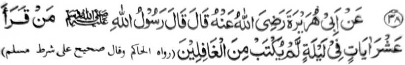

Hadith - 38

Miyakathitayan ko Abu Hurairah (Radhiallaho Anho) a pitharo iyan a pitharo o Rasulollah (Sallallaho Alaihi Wasallam), “Sa tao a matiya sa sapolo a Ayaat ko kagagawi-i na di sekaniyan izorat a ped ko madarainon.”
Di khapira ka minotos a imbatiya sa sapolo a Ayaat. So kanggola-ola a ro-o na miyalinding iyan so manosiya ko ki-itongen non a ped ko madarainonen, sangkoto a kagagawi-i. Tanto a mala a balas.